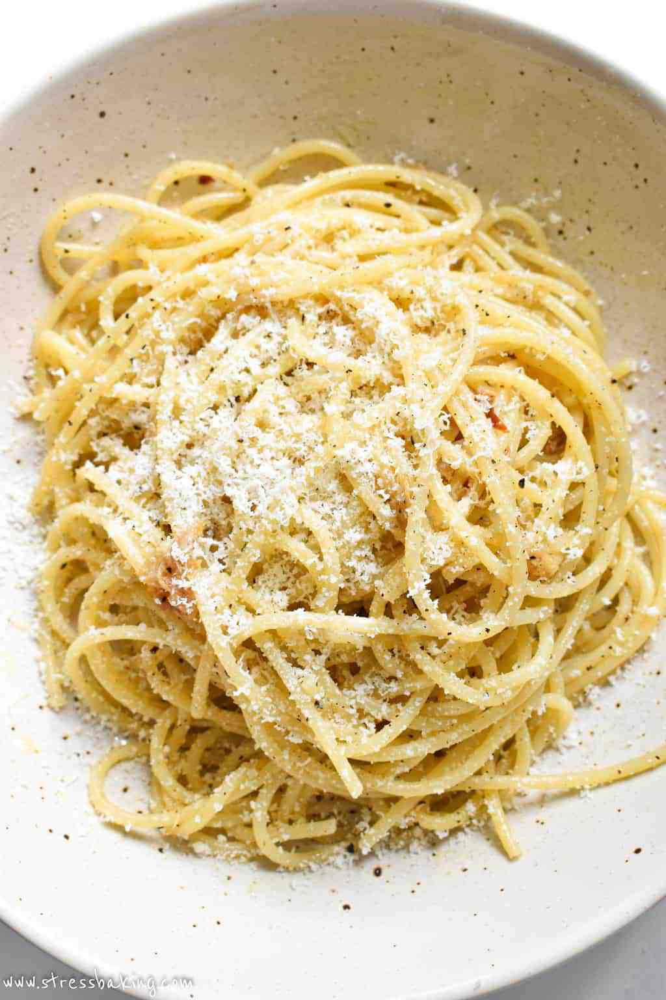

Pantry Pasta

This easy-to-make dish is made from kitchen staples and will likely become one of your favorites too!
Base Ingredients:
- Dried Pasta (my favorite for this is fusilli, but just about any variety can work)
- 1/4 cup Parmeasan (the real stuff, please!) + some for finishing/garnish
- 1/3 cup Olive Oil
- 1 Tbs Butter
- 1 Lemon (Zest and Juice)
- 1 Tsp Black Pepper (freshly ground)
- 3 minced Garlic Cloves
- Salt (to taste)
Optional Ingredients:
- 2 Anchovies
- Spices (Coriander Seed, Cardamom, Fennel Seed, or whatever floats your boat!)
- 1/3 cup chopped Red Onion
- 1/4 cup halved or quartered Cherry Tomatoes
- Any Cheeses you need to use up from the fridge
- Chicken or Veggie stock (in-place of water)
Steps:
- While the water for the pasta is heating to a boil, prepare the ingredients.
- When the pasta goes into the boiling water, begin the preparation of the sauce.
- Heat the olive oil in a skillet on medium heat, add the garlic, black pepper, and anchovies (if using).
- When the Garlic begins to turn slightly golden, add any additional spices to be used, and bloom for 30 seconds.
- Add the Parmesean cheese and 1/4 cup of the pasta water. Stir to Combine
- When the pasta is cooked al dente, strain and add to the sauce, tossing to coat.
- Add the butter and lemon juice and toss to combine. Once the Butter is melted and combined, take the pan off the heat.
- Add the lemon zest, tomatoes, onions (if using), and any additional cheese to taste.
- Toss to combine, serve, and enjoy!
Additional Considerations:
- If the pasta is done before the sauce, simply save 1/4 cup of the pasta water and strain the pasta to stop it from cooking further.
- If the sauce is done before the pasta, take the pan off the heat until the pasta is ready.